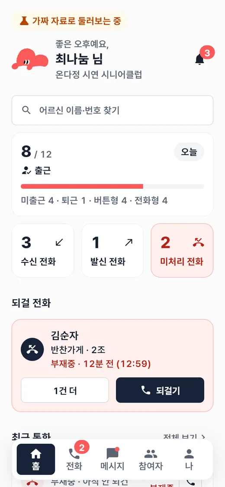
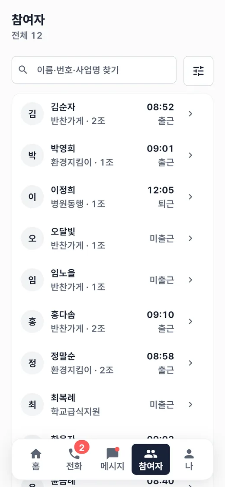
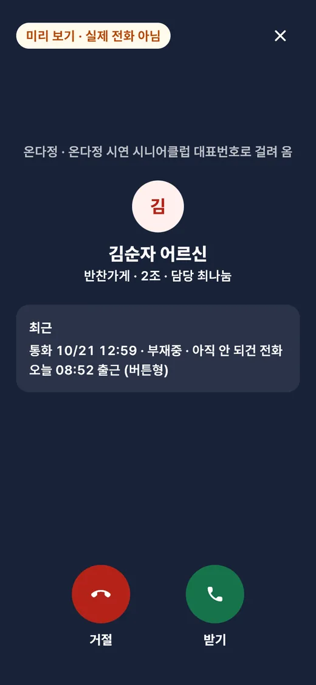

온다정 담당자 앱 — 현장에서 일하는 담당자를 위해
노인 일자리 기관의 담당자는 사무실보다 현장에 있을 때가 많습니다. 오늘 누가 출근했는지, 다시 걸어야 할 전화가 있는지, 어르신 한 분의 이번 주 근무가 어떤지를 휴대폰에서 바로 확인할 수 있게 만든 앱입니다. 웹 서비스와 같은 서버를 씁니다.
노인 일자리 기관의 담당자는 사무실보다 현장에 있을 때가 많습니다. 오늘 누가 출근했는지, 다시 걸어야 할 전화가 있는지, 어르신 한 분의 이번 주 근무가 어떤지를 휴대폰에서 바로 확인할 수 있게 만든 앱입니다. 웹 서비스와 같은 서버를 씁니다.
앱의 체험 모드 화면입니다. 이름과 기관은 모두 예시 데이터입니다.



tokens.dart 한 파일에 모으고, 웹 서비스의 디자인 토큰과 값을 맞췄습니다. 화면 코드에는 숫자를 직접 쓰지 않습니다. 어르신을 돕는 담당자용 앱이라 글자는 16 이상, 터치 영역은 48 이상으로 하고 말줄임 없이 보여 줍니다.회사 서비스라 코드는 비공개 저장소에 있습니다. 화면은 예시 데이터입니다.